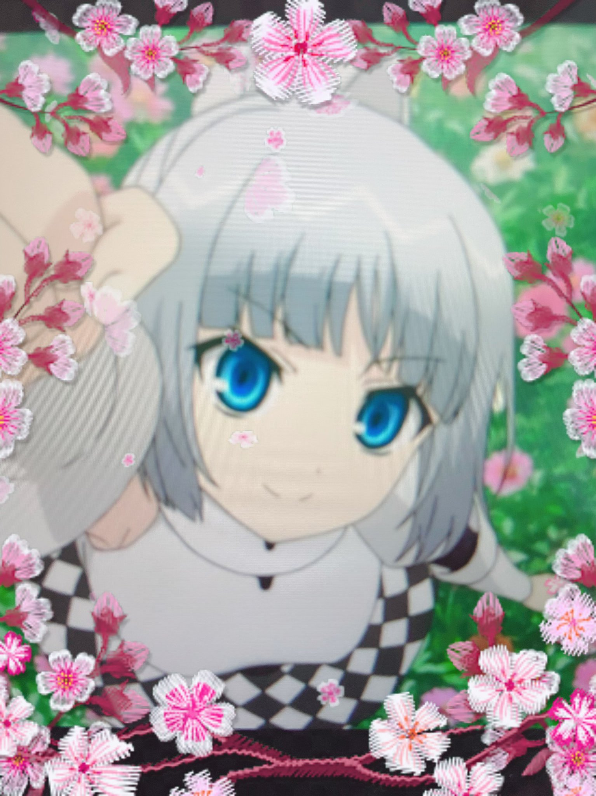

Top
Random
Bottom
2023
2022
2021
2020
2019
2018
2017
2016
2015
2014
2013
Hocchan Union
@hocchan_union
ミス・モノクローム
1,590 posts
(2022)
ミス・モノクローム
@miss_monochro
ワタシノナマエハ ミスモノクローム。サブスクリプションデゼンガッキョクハイシンチュウ！
モノクロ
http://www.starchild.co.jp/special/miss_monochrome_anime_2/
Joined September 2013
4
Following
13.8K
Followers
Posts
ミス・モノクローム
@miss_monochro
·
1:47 PM · Sep 07, 2022 JST
クロノヒ（イマゲンチジカンハ９ガツ６ニチ）

19
113
483
ミス・モノクローム
@miss_monochro
·
9:57 AM · Aug 12, 2022 JST
スイカタベタイ
16
33
201
ミス・モノクローム
@miss_monochro
·
5:49 PM · Aug 03, 2022 JST
ワタシ ショウボウダンインボシュウポスターノモデルニナッタ。ミンナニミテホシイケド、リンクサキワカラナイ。
19
84
303
ミス・モノクローム
@miss_monochro
·
10:43 PM · Jul 27, 2022 JST
ハッ！シバラクセツデンシテタ。
20
102
434
ミス・モノクローム
@miss_monochro
·
9:33 AM · Feb 14, 2022 JST
ハッピーバレンタイン。チョコアゲルカラタンサンデンチサンバイガエシネ。
13
83
345
ミス・モノクローム
@miss_monochro
·
8:17 AM · Jan 10, 2022 JST
アケマシテオメデトウ！チョットネスゴシタ！
29
69
319


 Joined September 2013
Joined September 2013